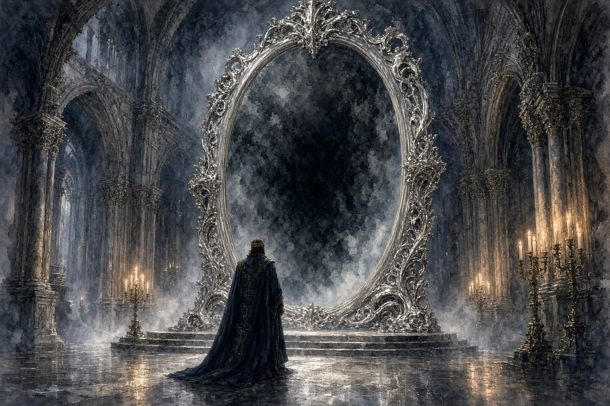

100%

Once upon a time, there was a king who had everything a king could want, which was, as it turned out, the problem.
His kingdom was a good one. The towers stood tall and white, the fields were fertile, and the people worked hard and were content, which is the best that can be said of any kingdom. Merchants came from across deserts and seas to trade. Scholars and sometimes its own kings wrote books praising the kingdom's wealth and its hardworking people, and recording the wisdom of its rulers and princes.
The royal family of this land worked as hard as their people. It was not uncommon to see the king walking through the capital with his family in tow, princes and princesses and nieces and nephews, checking on the fruit trees planted for the poor, or settling disputes for those who could not present themselves in court. They were good kings, and the people loved them.
In time, there came a king who was the best of his line. He was kind, noble, clever, and hardworking. But above all, he was ambitious.
One day, standing on his balcony and looking at the horizon, he thought: "Why should I demand tribute from my people, who work so hard? Is not my kingdom the greatest on the earth? I should speak to every ruler beneath the sun and show them my might and my glory. Let all kingdoms of the world know my name and all people hear my voice. Then tribute and trade shall pour into my kingdom as never before, and my people shall never know lack again."
So the king called to court all the wisemen and wizards. He put to them the task of gathering every alchemist and artificer they could find. In a year's time, the greatest minds of his kingdom and beyond were assembled in the great hall.
"Build for me a mirror that can reflect whatever I wish to see and hear," said the king. "Let it reach out that I may speak to anyone, no matter how distant. Let no kingdom be beyond my sight or my words. And let the mirror obey me and my words alone."
The artificers, the alchemists, the wisemen, and the wizards bowed and obeyed. They divided the task into parts. Artificers forged silver under full moons into beautiful shapes. Alchemists made glass with powders ground from fallen stars. They inscribed the frame with every language known to man, and some that they had recorded but none could read.
At last they revealed their masterpiece. It was indeed a great mirror, larger than a city gate and brighter than polished ice. All dark was its surface, like smoked glass, yet it glowed with a silver mist that flowed around it and through it and into its surface.
The king was immensely pleased. He laughed and smiled and clapped the shoulders of the project's leaders. "Now," he said, "I shall hold a court worthy of my kingdom."
He stepped forward and held up his scepter. "Mirror!" he commanded. "Bring to me the greatest kingdoms in all Creation!"
The mirror awakened, casting a cool silver glow throughout the room.
And because it had been made to obey his words alone and his words exactly, it did not merely seek the kingdoms known to men, but the greatest kingdoms that existed in all of creation.
First, it opened into Heaven.
A brass horn was heard, and a radiant light poured through the mirror and spread across the land. The king was moved to tears. Many of his wisemen fell to their knees.
Then it opened into Hell.
There was a burst of air so hot that a wizard's hat burst into flame. Ashes and embers drifted through the air like black snow. A sound like an iron hammer on a massive anvil nearly deafened them. The alchemists looked afraid.
It opened into the Sea Beneath the Sea, ancient Atlantis that lay drowned beneath the waves.
Water began to drip from the bottom of the mirror. The air became humid and uncomfortable, and little motes of green ghost light danced in the shadows of the room. A fish fell out of the mirror. When the king opened its mouth, he found a golden ring with a signet from a long-forgotten land.
It opened into the Land of the Dead.
The shadows of the room grew darker. A grey dead mist wound out along the floor. They heard whispers just beyond understanding. Hands seemed to press against the glass. An artificer fainted.
The mirror pushed the views aside to show the Twilight of the Fae.
Silver leaves began to blow into the room along with the sound of children's laughter and ancient songs. It smelled of spring and sunlight, and one of the wizards found himself tapping his foot happily to the music. The king glared at him.
Finally, the mirror pushed one last kingdom into view, and this, though they did not recognize it at first, was the City of Brass, where the Djinn raise glittering towers under a black sky of burning stars.
A smoke of incense began to emanate from the top of the mirror, and within it were little brass sparks. They heard a far-off instrument on occasion, but mostly they felt something stir in their hearts. Desire. Desire for wisdom, secret knowledge, riches, happiness. It was quiet and subtle.
So the mirror succeeded in doing as it had been asked. It brought to the king the greatest kingdoms of creation, six of them. And they each and all began to pour into his kingdom.
Heaven poured into the kingdom as a divine and golden light. It made the land more fertile than ever. Livestock was strong and without imperfection. Wherever it touched the king's subjects, diseases vanished, the old grew young, the blind saw, and the lame walked. The people rejoiced at this. What a blessing.
But the king was cautious now, observant and cynical. This had not gone to his plan, and he intended to understand what mistake he had made in the hopes that he could unmake it.
He saw that those touched by heaven indeed became young and healthy with the vitality of ten men. And that they did exactly nothing useful with it. Rather than work, they began to pray and sing praises. They begged repentance and forgiveness for their lives before their transformation. They abandoned their trades and neglected their farms. They could not butcher or even cook meat, and they were useless for war, as they were moved to tears at the sight of any blood or suffering. They could think of nothing but holiness.
"This is both a blessing and a curse," said the king, "Or perhaps a mixture of both, and far worse than either."
He decided then to keep a book of lessons, because he found that the things he learned were arriving too late to be useful. He wrote his thought within it and stared at it, hoping it would help him understand what had gone wrong.
The king turned his observations to those upon whom the ashes of Hell settled. His subjects' faces grew darker, and their hearts became selfish. Greed and vice flourished. It came to his ears that many cruel acts were committed beneath the cover of night. Yet, as he watched, he found that those same people worked with an intensity he had never seen before. They built workshops, roads, mills, and ships with speed and precision. They sought profit, yet they often performed acts of charity and kindness. When asked why, they would often reply with a sly grin: "One good turn today deserves two tomorrow."
"This is not evil nor righteousness," the king thought to himself. "It's more terrifying than either."
He wrote this down in his book, too. He read it and the first entry several times, but it did not clear up the matter.
From Atlantis came wonders. Fish beyond measure filled the rivers. Treasures washed ashore regularly. Gold began to spill into the kingdom from every crack in a wall like it was water. This would have enriched the kingdom into poverty had it not also been for the monsters. Horrible things came too, seemingly for the gold, boiling up out of lakes and from the abyss of the ocean. They shattered towers, overturned ships, and tore down walls before the king's knights or local stout hearts could drive them away or kill them.
The king felt he was catching on, but it did not make him happy. "Risk and reward all in the same box," he mused to himself on his throne.
From the Land of the Dead there came no armies, no treasures, nor miracles. For many days, nothing seemed to have come at all. Then one night there came a knocking. A widow opened her door and found her dead husband standing there. A son found his mother. An old woman found the child she had buried years before. Soon there came a knocking up at the king's gate too. When he opened it, there stood his father, dead for twenty years.
The kingdom rejoiced again. People were reuniting with those they thought lost forever, but the king had read the wisdom of his fathers. He knew that this would not end well. He issued a Royal Decree immediately: homes are the abode of the living, and no dead would ever be allowed to cross the threshold of a home. His command turned out to be wisdom.
The dead brought comfort. But what they brought most was memory. Ancient feuds long ago buried were dug up, and the dead fought amongst each other over oaths, rivalries, and sins none remembered but them. Marriages were challenged by dead husbands and dead fathers and dead suitors. Women wished to leave their families to join their long-past lovers from their youth. Old claims to forgotten and moved land boundaries were brought before the king. Forgotten crimes paved over by the passage of time were brought to trial. Questions that were long thought settled were asked again and again and again.
The living could scarcely speak of tomorrow, for yesterday crowded every road and pub and field.
"Memory is a blessing," said the king to one of his wisemen, "but forgetting is a mercy." The wiseman wandered away, deep in conversation with his great-grandfather on ancient views of philosophy.
The king wrote it down.
From the Twilight of the Fae, their forest kingdom forever hidden from the sight of man by a glamour that even the Mirror could not completely pierce, there came endless, beautiful music, and with it wonders unimagined.
Flowers bloomed in winter. Birds sang songs no one had ever heard and could scarcely believe. Craftsmen created masterpieces of impossible beauty. Poets composed verses that seemed immortal. The kingdom became more lovely than any other kingdom before it.
And yet that beauty was always passing. The verses the poets wrote today were forgotten by tomorrow. Masterpiece crafts littered the yards outside workshops as their creators toiled now over their next mad and wondrous idea. People wandered from their work pursuing distant melodies. Travelers disappeared into faerie rings or feasting beneath the moon with delightful strangers. Old men appeared suddenly claiming they had danced for a hundred years the night before. Children disappeared into the forests and were never seen again. Promises and oaths dissolved. Time itself felt that it was eroding.
"Wonder is a precious jewel," said the king, mostly to himself, "but you cannot build a roof out of jewels." His sons nodded and considered this seriously. One of his younger daughters sat on his lap and said, "A jeweled roof would be pretty at night, but blinding in the day."
He took a little comfort from this, and wrote it down in his book.
Finally was the incense from the City of Brass. At first there truly seemed to be nothing to it. The little brass sparkles would fall upon animals and people alike to no apparent change. It took a long time for its effect to be realized, and only because the king desired to understand above all things.
That turned out to be the trick.
A woman who had been raised poor wished for wealth and found her cellar had been filled with precious pearls. Thinking that Atlantis had gifted her something other than all that useless gold, she kept her find a secret for some time. Then she wished that she had a way to protect her pearls from everyone, and the next day a dragon attacked her home and took possession of her vault.
A cripple wished to dance and suddenly found he could stand and move again. He danced with joy until he realized that now he would have to work to earn his bread. Then he cursed and wished that he had some skill that would guarantee he would eat for the rest of his life. He was captured by bandits and made a slave, though fed three meals a day.
Everywhere merchants suddenly had fantastic deals, always the perfect product, always the perfect price. Dreams seemed like they were but an outstretched hand away. Yet every fulfilled wish gave birth to two more, and many of them turned sideways from desire.
The people got exactly what they wanted and discovered that their desires were badly formed, over and over and over. Every satisfaction became the seed of a new longing.
"Possibility is a vast ocean with no shore," thought the king. He didn't say it aloud. He just wrote it down, because no one was listening to him anymore.
Having made his observations, the king climbed the highest tower of his palace to examine his kingdom from the same parapet that the idea of the mad mirror had been born on. He looked down upon saints who could not work; sinners who could not rest, the dead who could not leave; dreamers who could not stay; treasure that brought no satisfaction; and wishers who could never be satisfied.
His kingdom overflowed with wonders.
And yet it was dying.
His kingdom was dying as no other kingdom had before it. It was not dying of war, nor famine, nor plague. It was dying of abundance.
The king went down from his tower and wrote down this new wisdom carefully. "There is no light without shadow, nor treasure without danger. No memory without sorrow, nor wonder without bewilderment. No possibility exists that does not also come with regret. Every gift arrives carrying its burden within itself, and nothing in all creation comes alone."
Then he went to close the mirror.
The king went into the great hall alone and stood before the towering silver thing, scepter raised, and commanded: "Mirror! Close now! I command it."
The mirror did not close. The six realms kept pouring through. The king tried different words. "Close." "Shut." "End." "Enough." The mirror had been made to obey his words exactly, but none of his words meant anything to it. It had been made to show him what he asked for, and it was showing him the greatest kingdoms of creation. That was what he'd asked it to do.
He tried to close the mirror until he could stand no more. Then he took an uncomfortable sleep on a table that had been shoved aside to make room for the mirror. When he awoke he found that his children had placed a blanket over him and left him a cup of wine and plate of food. He ate, with thankfulness, then resumed his task.
He tried every combination of words he could think of, but nothing seemed to have any effect. Day after day and long into each evening he spoke, and demanded and cursed at the mirror until his throat ached and his feet would hold him no more. He would sleep for a few short hours, awake, break his fast with a prayer of thanks and once again begin his tirade at the mirror. After a week of this, he gave up. The mirror would not obey the one it had been made to obey. He decided that the mirror obeyed no one, now, but itself.
He turned then to the men who had built it. He had them gathered up as best as he could, with threats and beatings when necessary, and assembled them in the great hall once again. "I have tried to make the mirror close without success for seven days and seven nights. I know not why it refuses to obey me, but now I command you. Close the mirror."
The men all looked at one another in bewilderment. They bowed low to the ground. "Your Majesty," they replied, "we know how to make a thing. We do not know how to unmake it. You commanded us to dig a river where no river should have been. How can the mirror close upon a flood? And even if we could build you a dam in a day, we cannot force back all that has traveled upon that river."
The king ordered them imprisoned. This did not solve anything, but it was something to do.
Then the king decided to send messengers to each of the realms and request that they withdraw from his borders and return their gifts and curses along with them.
He sent a messenger to Heaven first. "Take back your light."
Heaven sent back a reply. "We did not come to you. You opened your doors and our light spilled out."
And the light remained.
He sent messengers to Hell. "Take back your ashes."
Yet Hell answered: "We have never yet returned what was freely given us."
And the ashes remained.
The Dead and the Sea answered much the same as Hell, and remained just as intolerably in his borders.
When he sent messengers to the Fae, the Fae answered: "We do not answer to kings." This made the king burn with wrath but the answer from the Djinn in the City of Brass made him swallow it again.
The Brass simply answered: "A wish cannot be unwished."
This he wrote in his book with a shaking hand.
Each of the six kingdoms gave the same answer in their own fashion. They had none of them forced themselves upon the kingdom. The kingdom had invited them. None wished to leave.
Then the king, nearly at his wit's end, tried looking for a hero. He put forth a proclamation:
"Let a hero be found who can set this matter right. Whosoever can restore my kingdom shall receive half the royal treasury, and the hand of any one of my sons or daughters in marriage they choose." His children were not too pleased by this, but they agreed that this was a necessary sacrifice amongst themselves. Their father had never been anything but kind to them, and it was their kingdom too that was falling to pieces around them. If one of them had to marry some mad hero it was worth it to save their land and their father.
Heralds rode out carrying the message. They made sure to send plenty of extra heralds, since it was inevitable that some would get lost or distracted. Nonetheless, no heroes appeared.
The holy men touched by heaven had no interest in earthly affairs. The ambitious men touched by Hell judged the reward too uncertain an investment. The dead remembered too much to be bothered. The fae-touched forgot the quest before the day was over. The wish-struck were too busy pursuing ever greater rewards.
The king waited on his throne for a week. He waited in his court for a month. He wandered the vast and empty palace for a year. His servants, his knights, even his wisemen and cabinet all became touched by one of the forces overflowing his country and went out to pursue some end or other. Only his family remained.
The king understood another terrible thing. He wrote it down in his book of late lessons. It was getting to be a large book.
"In a kingdom that lacks nothing, heroes cannot be found."
His kingdom overflowed with everything. Therefore, it had no heroes.
Now at last, having exhausted every option a king has, the king descended into his great hall alone to face the mirror. The Mirror of Everything stood before him, its view unchanged since it had squeezed the six realms into its frame when all this started. The king looked up at Heaven and Hell, the Sea and the Dead, the Fae and the Brass, all at once. He wondered what he might have asked for instead if he had been as wise then as he had the misfortune of becoming today.
And at once, he understood exactly what he should have asked for.
"I never knew what it was that I had," he said. "I should never have stretched my hand so wide until I understood myself and my kingdom first."
He shook his head ruefully and made the request he should have made at the start.
"Mirror. Show me only my own kingdom."
Now, the Mirror obeyed him. Its surface churned, and all the great kingdoms of creation winked out of view as his own kingdom began to be seen. The king looked. And his heart sank.
There was no longer any kingdom of his own. Heaven had entered it. Hell had entered it. The dead and the Fae, the Djinn and the Sea had all entered it. His kingdom had become everything. And because it had become everything, the mirror could no longer tell where it ended.
The king had learned great wisdom. But he had learned it too late. He fell to his knees before the mirror and sobbed. He cried alone and only his eldest son and daughter, watching behind the servant's door, heard him.
"You have given me everything," the king wept. Within his chest, he felt some dark resolve harden even as his heart broke. "And left me with nothing!" the king roared.
In despair, he seized his scepter and his sword and struck the mirror with all his might. A single crack formed from the blow. He struck it again, and the crack spread like frost on smooth stone. He screamed and put all his strength into the third blow. The mirror shattered. The crash was heard throughout the land. Millions upon millions of fragments flew outward, scattered across the floor, out the windows, and in every direction.
The king took a long moment to catch his breath. He nearly rejoiced. He nearly relaxed. But he thought better of it.
He leaned down and examined a shard on the floor and realized that what he had just done was the true catastrophe. He had not destroyed the mirror, only shattered it. And every shard remained a Mirror of Everything.
In the shard he held, he could see a view into hell, and a belch of ash came out of it when he dropped it on the ground. He stepped backwards on another and it crunched under his foot into a thousand more pieces, a single angel's chorus corrupting to tritones and dissonance. Water shot out of a few pieces, washing still more out of the great hall and around the castle. Everywhere he looked he saw that the shards were pouring more of the six mighty kingdoms into his own than ever before.
But that was not all, for the mirror shards were not ruled in the same way that the Mirror had been. They began to open up into stranger places still. Realms without name, realms without reason. Realms of madness, or darkness, or destruction, even places beyond the edge of placement, outside of time, where space has no meaning. These the king avoided looking at as best he could.
The horror of what he had done dawned upon him slowly, but completely. Soon, the king thought, no map could be trusted. A farmer digging a well might strike a mirror-fragment and drown in waters from Atlantis. A child might pick up a glittering piece on the side of the road and find herself speaking with angels. A beggar sleeping beneath a bridge could awake inside a brass lamp, a djinn shaking him and asking him for wishes. A prince opening a cupboard for tea and might discover the doorway led into a dragon's den a thousand worlds away.
The Mirror had made the old kingdom become a single great wound in the fabric of reality. By the king's hand, it had become a million tiny wounds. And still, he thought, it was worse than that. The shards would spread, as all things do when they come in contact with each other. This was a creeping pollution, a corruption, a mixing of everything into everywhere. If no one could contain this, it would destroy the world, perhaps all worlds, for who knows what might happen if the ocean flooded hell, or the dead went chasing wishes.
The king dropped his scepter and sword and went upstairs slowly, exhausted, to his book of lessons and wrote in it one last time. "A door may be closed. A wall may be mended. But a thing that has been broken into a thousand pieces enters a thousand places."
The king, as was said at the beginning of this tale, was not a wicked man. He did not shirk from duty nor responsibility. He was a noble person and kind, and only his ambition and hubris had led him to this terrible end. Now he was much wiser, for whatever good that did.
The king did not give in to despair, but he could not rule his kingdom. There was no more kingdom for him to rule.
The king removed his crown. He took off his royal robe and his signet ring. He took them down into the great hall and arranged them along with his sword and scepter. Then he found a long robe, left behind by one of the wisemen, and he put it on. He took a knight's sword and scabbard and tied it about his waist. He found a comfortable hat from some visiting dignitary and placed that on his head. He found a pair of leather gloves and a bag forgotten by an alchemist. At last, he went into his beautiful garden and cut a long, strong walking stick for himself.
He took his book of lessons from the palace and put it in the bag, alongside the first shard he had gathered.
The king left his palace and walked a short distance. He stooped down and carefully, with a gloved hand, picked up a tiny sparkle on the ground. He opened his bag and tipped it inside. Then he kept walking until he found another fragment of the mirror.
His family watched all this, the princes and princesses of that kingdom who, like the king himself, had remained themselves, unaffected by the motes and light and ashes and wishes and songs from other worlds. They counseled among themselves, and that counsel would have become a row had it not been for the eldest son. Some wanted to leave this land, and others wanted to reclaim it, but the eldest son made his case, in a quiet and firm voice. He spoke not of high causes and distant virtues, but only of their father, his loyalty, his love, and his terrible loss. The others listened to his calm words in shocked silence and came to an agreement. The sons and daughters of the king discarded their royal clothes, their tiaras and jewels, their fine cloaks and slippers, their soft gloves and comfortable lives.
They raided the palace for all it had to offer to a clan of vagabonds, for thus they decided they had to become. Two brothers and their sister were elected and remained in the castle to guard the pile of fragments already there from intrusion or theft. The rest followed their father's example. They walked out into the world with only what they needed to complete their task.
When the king saw this, his children coming out of the palace to join him in the rags and robes of wanderers, he made an attempt to dissuade them, but his eldest daughter took his hand and quieted him. "It would take you forever, my dear father, to clean up this mess alone. Indeed, alone you have already made a terrible disaster, and lost much. But you did not lose everything. Together, Father, we shall mend this."
The royal family would claim no land again until they had collected every piece of the Mirror of Everything and shut it once and for all. It is said that they still seek throughout reality, across all the world and every world for those pieces, and guard them jealously even today.
For some doors exist for a good reason, and not every boundary is meant to be crossed.
The End.